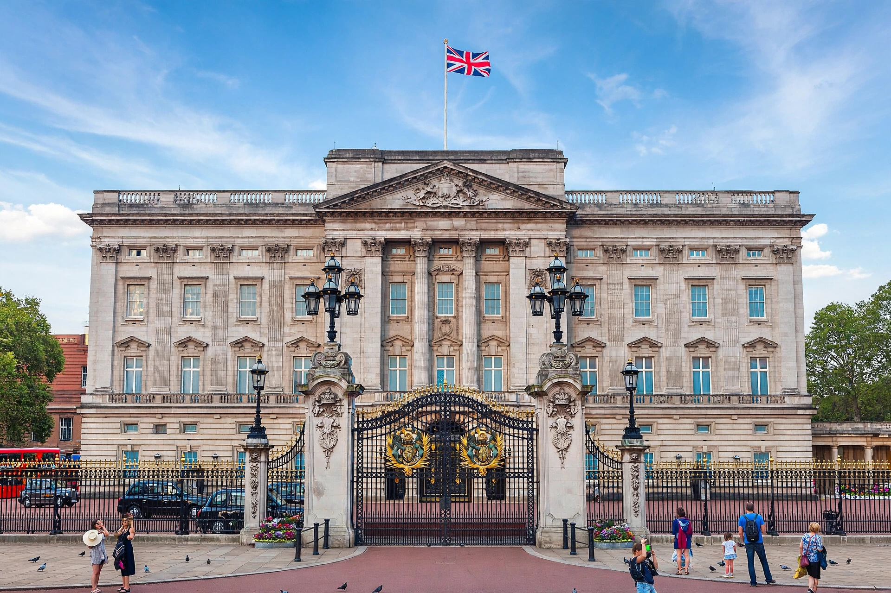

Monarchy of the United Kingdom
This article is about the British monarchy. For the current monarch, see Charles III.
| Monarchy of the United Kingdom | |
|---|---|
| Incumbent | Charles III since 8 September 2022 |
| Style | His Majesty |
| Heir apparent | William, Prince of Wales |
| First monarch | Anne of Great Britain (Kingdom of Great Britain, 1707); the institution traces to earlier English and Scottish kingship |
| Formation | 1 May 1707 (Acts of Union 1707) |
| Residence | Buckingham Palace (official), Windsor Castle, Palace of Holyroodhouse |
| Website | royal.uk |

The monarchy of the United Kingdom, commonly referred to as the British monarchy, is the form of government used by the United Kingdom of Great Britain and Northern Ireland in which a hereditary monarch is the country's head of state. The current monarch and head of state, King Charles III, ascended the throne on 8 September 2022 upon the death of his mother, Queen Elizabeth II, whose reign of more than 70 years was the longest of any British sovereign.
The monarch and their immediate family undertake various official, ceremonial, diplomatic and representational duties. The British monarchy is constitutional: although the sovereign is head of state, the ability to make and pass legislation resides with an elected Parliament. Most of the monarch's powers are exercised by convention and are carried out on the advice of ministers, a legacy of the political settlement reached after the Glorious Revolution of 1688.
- Constitutional role
- History
- Succession
- Finances
- Residences
- See also
Constitutional role
The monarch is head of state of the United Kingdom and of 14 other Commonwealth realms, including Canada, Australia and New Zealand. Within the UK, the sovereign appoints the prime minister — by convention, the person able to command the confidence of the House of Commons — opens each session of Parliament with the King's Speech, and grants royal assent to legislation. The monarch is also head of the armed forces, the Supreme Governor of the Church of England, and the source of executive authority formally exercised in the sovereign's name.
The last time a monarch refused royal assent was in 1708, when Queen Anne withheld it from the Scottish Militia Bill. Modern constitutional practice holds that the sovereign "has the right to be consulted, the right to encourage, and the right to warn", in the formulation of the Victorian constitutional writer Walter Bagehot.
History
The institution developed from the kingships of England and Scotland, which were united in personal union in 1603 when James VI of Scotland succeeded to the English throne, and politically united by the Acts of Union 1707. The execution of Charles I in 1649 and the brief republican Commonwealth of England under Oliver Cromwell interrupted the monarchy before its restoration in 1660. The Bill of Rights 1689 and the Act of Settlement 1701 placed firm statutory limits on royal power and settled the succession on Protestant descendants of Sophia, Electress of Hanover.
The monarchy's political power declined steadily through the nineteenth and twentieth centuries, while its ceremonial and symbolic role grew. George V changed the royal house's name to Windsor in 1917. The abdication of Edward VIII in 1936 remains the only voluntary abdication of a British monarch. Elizabeth II, who acceded in 1952, oversaw the transformation of the British Empire into the Commonwealth of Nations.
Succession
Succession is governed by the Act of Settlement 1701, the Royal Marriages Act 1772 and the Succession to the Crown Act 2013. The 2013 Act introduced absolute primogeniture for those born after 28 October 2011, ending male-preference succession, and removed the disqualification arising from marriage to a Roman Catholic, though the sovereign must still be in communion with the Church of England. The heir apparent is William, Prince of Wales, followed by his children Prince George, Princess Charlotte and Prince Louis.
Finances
The monarchy is funded principally through the Sovereign Grant, established by the Sovereign Grant Act 2011, which replaced the Civil List. The grant is calculated as a percentage of the profits of the Crown Estate — a portfolio of land and property held in trust — and funds official travel, staff, and the maintenance of occupied royal palaces. The Duchy of Lancaster provides the sovereign's private income, while the Prince of Wales is supported by the Duchy of Cornwall.
Residences
The monarch's official residences include Buckingham Palace and St James's Palace in London, Windsor Castle in Berkshire, and the Palace of Holyroodhouse in Edinburgh. Sandringham House in Norfolk and Balmoral Castle in Aberdeenshire are privately owned by the sovereign. Hillsborough Castle is the official residence in Northern Ireland.
See also
British Empire · Commonwealth of Nations · List of British monarchs · Republicanism in the United Kingdom